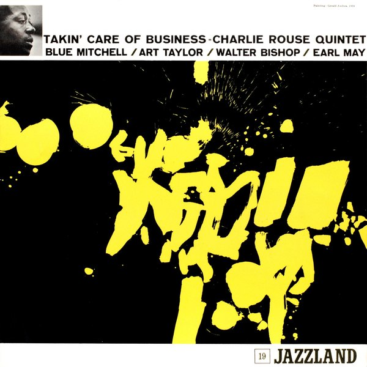

CRVI001366Kenny Burrell - Kenny Burrell
Cover drawing by Andy Warhol · Blue Note 1543 · 1957
Cover drawing by Andy Warhol · Blue Note 1543 · 1957

CRVI001291Phil Woods, Gene Quill, Sahib Shihab, Hal Stein - Four Altos
Designed by Reid Miles · Prestige 7116 · 1958
Designed by Reid Miles · Prestige 7116 · 1958

CRVI000144Bud Shank Quartet - Jazz at Cal-Tech
Designed by William Claxton · Pacific Jazz 1219 · 1956
Designed by William Claxton · Pacific Jazz 1219 · 1956

CRVI001143Jackie McLean - Destination... Out!
Designed by Larry Miller, photograph by Francis Wolff · Blue Note BLP 4165 · 1964
Designed by Larry Miller, photograph by Francis Wolff · Blue Note BLP 4165 · 1964

CRVI001171Serge Chaloff - Blue Serge
Designer unrecorded · Capitol Records T 742 · 1956
Designer unrecorded · Capitol Records T 742 · 1956

CRVI000177Hank Mobley - Tenor Conclave
Designed by Bob Weinstock · Prestige LP 7074 · 1956
Designed by Bob Weinstock · Prestige LP 7074 · 1956

CRVI001309Lee Morgan - The Rumproller
Designed by Reid Miles, photograph by Francis Wolff · Blue Note 4199 · 1965
Designed by Reid Miles, photograph by Francis Wolff · Blue Note 4199 · 1965

CRVI001381Benny Golson - Benny Golson and the Philadelphians
Designer unrecorded · United Artists 4020 · 1959
Designer unrecorded · United Artists 4020 · 1959

CRVI001125Dexter Gordon - Go
Designed by Reid Miles, photograph by Francis Wolff · Blue Note BLP 4112 · 1962
Designed by Reid Miles, photograph by Francis Wolff · Blue Note BLP 4112 · 1962

CRVI001283The Modern Jazz Quartet - Concorde
Designed by Reid Miles · Prestige 7005 · 1955
Designed by Reid Miles · Prestige 7005 · 1955

CRVI001124Dexter Gordon - Gettin' Around
Designed by Reid Miles, photograph by Francis Wolff · Blue Note BST 84204 · 1965
Designed by Reid Miles, photograph by Francis Wolff · Blue Note BST 84204 · 1965

CRVI001144Jackie McLean - It's Time!
Designed by Reid Miles, photograph by Francis Wolff · Blue Note BLP 4179 · 1965
Designed by Reid Miles, photograph by Francis Wolff · Blue Note BLP 4179 · 1965

CRVI001177Wayne Shorter - Et Cetera
Designed by Bill Burks, photograph by Don Peterson · Blue Note LT-1056 · 1980
Designed by Bill Burks, photograph by Don Peterson · Blue Note LT-1056 · 1980

CRVI001138Herbie Hancock - Takin' Off
Designed by Reid Miles · Blue Note BLP 4109 · 1962
Designed by Reid Miles · Blue Note BLP 4109 · 1962

CRVI000423Har-You Percussion Group - The Har-You Percussion Group
Designer unknown · ESP Disk · 1969
Designer unknown · ESP Disk · 1969

CRVI000151Charles Mingus - The Clown
Designed by Marvin Israel · Atlantic 1260 · 1957
Designed by Marvin Israel · Atlantic 1260 · 1957

CRVI001293The Red Garland Quintet - All Mornin' Long
Designed by Esmond Edwards · Prestige 7130 · 1958
Designed by Esmond Edwards · Prestige 7130 · 1958

CRVI001157John Coltrane, Frank Wess, Paul Quinichette - Wheelin' & Dealin'
Designed by Esmond Edwards · Prestige PRLP 7131 · 1958
Designed by Esmond Edwards · Prestige PRLP 7131 · 1958

CRVI001120Bobby Hutcherson - Stick-Up!
Designed by Reid Miles, photograph by Francis Wolff · Blue Note BST 84244 · 1968
Designed by Reid Miles, photograph by Francis Wolff · Blue Note BST 84244 · 1968

CRVI001270Grachan Moncur III - Some Other Stuff
Designed by Reid Miles · Blue Note 4177 · 1965
Designed by Reid Miles · Blue Note 4177 · 1965

CRVI001279Stan Getz - Long Island Sound
Designer unrecorded · New Jazz 8214 · 1959
Designer unrecorded · New Jazz 8214 · 1959

CRVI001260John Coltrane - Coltrane's Sound
Designed by Marvin Israel · Atlantic 1419 · 1964
Designed by Marvin Israel · Atlantic 1419 · 1964

CRVI001267Horace Parlan Quintet - Speakin' My Piece
Designed by Reid Miles, photograph by Francis Wolff · Blue Note 4043 · 1960
Designed by Reid Miles, photograph by Francis Wolff · Blue Note 4043 · 1960

CRVI001145Jackie McLean - Let Freedom Ring
Designed by Reid Miles, photograph by Francis Wolff · Blue Note BLP 4106 · 1963
Designed by Reid Miles, photograph by Francis Wolff · Blue Note BLP 4106 · 1963

CRVI001303Horace Parlan - Happy Frame Of Mind
Designed by Reid Miles, photograph by Francis Wolff · Blue Note 4134 · 1966
Designed by Reid Miles, photograph by Francis Wolff · Blue Note 4134 · 1966

CRVI001117Andrew Hill - Point Of Departure
Designed by Reid Miles · Blue Note BLP 4167 · 1965
Designed by Reid Miles · Blue Note BLP 4167 · 1965

CRVI000169Chet Baker - Chet Baker & Crew
Designer unknown · Pacific Jazz 1224 · 1956
Designer unknown · Pacific Jazz 1224 · 1956

CRVI001367Joe Henderson - In 'n Out
Designed by Reid Miles, photograph by Francis Wolff · Blue Note 4166 · 1965
Designed by Reid Miles, photograph by Francis Wolff · Blue Note 4166 · 1965

CRVI001175Thelonious Monk - Thelonious Alone In San Francisco
Designed by Harris Lewine, Ken Braren, Paul Bacon, photograph by William Claxton · Riverside Records RLP 1158 · 1959
Designed by Harris Lewine, Ken Braren, Paul Bacon, photograph by William Claxton · Riverside Records RLP 1158 · 1959

CRVI001290Webster Young - For Lady
Designed by Reid Miles, photograph by Esmond Edwards · Prestige 7106 · 1957
Designed by Reid Miles, photograph by Esmond Edwards · Prestige 7106 · 1957

CRVI001149Jimmy Smith - A New Sound... A New Star... Jimmy Smith At The Organ Volume 1
Designed by Reid Miles, photograph by Francis Wolff · Blue Note BLP 1512 · 1956
Designed by Reid Miles, photograph by Francis Wolff · Blue Note BLP 1512 · 1956

CRVI001373Max Roach - Max Roach + 4 at Newport
Designed by Emmett McBain · EmArcy 36140 · 1958
Designed by Emmett McBain · EmArcy 36140 · 1958

CRVI001158John Scofield - Hand Jive
Designed by Mark Larson, photograph by Patti Perret · Blue Note CDP 7243 8 27327 2 3 · 1994
Designed by Mark Larson, photograph by Patti Perret · Blue Note CDP 7243 8 27327 2 3 · 1994

CRVI001377Thelonious Monk Trio - Thelonious Monk Trio
Designer unrecorded · Esquire 75 · 1956
Designer unrecorded · Esquire 75 · 1956

CRVI001271Art Blakey & The Jazz Messengers - Indestructible
Designed by Reid Miles, photograph by Francis Wolff · Blue Note 4193 · 1966
Designed by Reid Miles, photograph by Francis Wolff · Blue Note 4193 · 1966

CRVI001285The Gil Mellé Quartet - Mellé Plays Primitive Modern
Designer unrecorded · Prestige 7040 · 1956
Designer unrecorded · Prestige 7040 · 1956

CRVI001128Donald Byrd - Black Byrd
Artwork by Eileen Anderson, photograph by Art Hanson · Blue Note BN-LA047-F · 1973
Artwork by Eileen Anderson, photograph by Art Hanson · Blue Note BN-LA047-F · 1973

CRVI001216Pharoah Sanders - Karma
Designed by Robert & Barbara Flynn, photograph by Chuck Stewart · Impulse! AS-9181 · 1969
Designed by Robert & Barbara Flynn, photograph by Chuck Stewart · Impulse! AS-9181 · 1969

CRVI001164Lee Morgan - Cornbread
Designed by Reid Miles, photograph by Francis Wolff · Blue Note BST 84222 · 1967
Designed by Reid Miles, photograph by Francis Wolff · Blue Note BST 84222 · 1967

CRVI001294Gene Ammons' All Stars - The Big Sound
Designer unrecorded · Prestige 7132 · 1958
Designer unrecorded · Prestige 7132 · 1958

CRVI001132Grant Green - Goin' West
Designer unrecorded · Blue Note BST 84310 · 1969
Designer unrecorded · Blue Note BST 84310 · 1969

CRVI001142Jackie McLean - Demon's Dance
Designed by Bob Venosa, artwork by Mati Klarwein · Blue Note BST 84345 · 1970
Designed by Bob Venosa, artwork by Mati Klarwein · Blue Note BST 84345 · 1970

CRVI001372Eric Dolphy - Out There
Cover painting by Richard “Prophet” Jennings · New Jazz 8252 · 1960
Cover painting by Richard “Prophet” Jennings · New Jazz 8252 · 1960

CRVI001306June Christy - Off Beat
Designer unrecorded · Capitol T 1498 · 1960
Designer unrecorded · Capitol T 1498 · 1960

CRVI001275Howard McGhee - Howard McGhee
Designed by Paul Bacon · Blue Note 5012 · 1952
Designed by Paul Bacon · Blue Note 5012 · 1952

CRVI001276Gil Mellé Quintet - New Faces – New Sounds
Designed by Gil Mellé · Blue Note 5020 · 1953
Designed by Gil Mellé · Blue Note 5020 · 1953

CRVI001300Blossom Dearie - Once Upon A Summertime
Designed by Gene Federico · Verve Records MG V-2606 · 1958
Designed by Gene Federico · Verve Records MG V-2606 · 1958

CRVI001206The Jazz Messengers - The Complete Jazz Messengers At The Cafe Bohemia
Designed by Reid Miles, photograph by Francis Wolff · Blue Note · 1956
Designed by Reid Miles, photograph by Francis Wolff · Blue Note · 1956

CRVI001378Thad Jones, Frank Wess, Teddy Charles - Olio
Designed by Diz Disley · Esquire 32-065 · 1957
Designed by Diz Disley · Esquire 32-065 · 1957

CRVI001135Grant Green - Sunday Mornin'
Designed by Reid Miles, photograph by Francis Wolff · Blue Note BLP 4099 · 1962
Designed by Reid Miles, photograph by Francis Wolff · Blue Note BLP 4099 · 1962

CRVI000150Art Blakey's Jazz Messengers - Art Blakey's Jazz Messengers
Designed by Marvin Israel · Atlantic 1278 · 1957
Designed by Marvin Israel · Atlantic 1278 · 1957

CRVI001274Fats Navarro - Memorial Album
Designed by Paul Bacon · Blue Note 5004 · 1953
Designed by Paul Bacon · Blue Note 5004 · 1953

CRVI000228Us3 - Hand On The Torch
Typography by Stylorouge · Blue Note CDP 0777 7 80883 2 5 · 1993
Typography by Stylorouge · Blue Note CDP 0777 7 80883 2 5 · 1993

CRVI001264Paul Chambers Quartet - Bass On Top
Designed by Harold Feinstein, photograph by Francis Wolff · Blue Note 1569 · 1957
Designed by Harold Feinstein, photograph by Francis Wolff · Blue Note 1569 · 1957

CRVI001133Grant Green - Live At The Lighthouse
Designed by John Van Hamersveld, photograph by Al Vandenberg · Blue Note BN-LA037-G2 · 1972
Designed by John Van Hamersveld, photograph by Al Vandenberg · Blue Note BN-LA037-G2 · 1972

CRVI001307Lee Morgan - Charisma
Designed by Ann Meisel, photograph by Francis Wolff · Blue Note 4312 · 1969
Designed by Ann Meisel, photograph by Francis Wolff · Blue Note 4312 · 1969

CRVI001288Tadd Dameron with John Coltrane - Mating Call
Designed by Esmond Edwards, Tom Hannan · Prestige 7070 · 1957
Designed by Esmond Edwards, Tom Hannan · Prestige 7070 · 1957

CRVI001123Jackie McLean - Jacknife
Designed by Bob Cato, photograph by Raymond Ross · Blue Note BN-LA457-H2 · 1975
Designed by Bob Cato, photograph by Raymond Ross · Blue Note BN-LA457-H2 · 1975

CRVI001162Kenny Dorham - Una Mas
Designed by Reid Miles, photograph by Francis Wolff · Blue Note BLP 4127 · 1963
Designed by Reid Miles, photograph by Francis Wolff · Blue Note BLP 4127 · 1963

CRVI000296Miles Davis - On The Corner
Designer unknown · Columbia · 1972
Designer unknown · Columbia · 1972

CRVI001379Sonny Rollins - The Standards Set by Sonny Rollins and Thelonious Monk
Designer unrecorded · Esquire 148 · 1957
Designer unrecorded · Esquire 148 · 1957

CRVI001139The Horace Silver Quintet - Horace-Scope
Artwork by Paula Donohue, photograph by Francis Wolff · Blue Note BLP 4042 · 1960
Artwork by Paula Donohue, photograph by Francis Wolff · Blue Note BLP 4042 · 1960

CRVI001165Lee Morgan - The Sidewinder
Designed by Reid Miles, photograph by Francis Wolff · Blue Note BLP 4157 · 1964
Designed by Reid Miles, photograph by Francis Wolff · Blue Note BLP 4157 · 1964

CRVI001317Miles Davis and Milt Jackson - Quintet/Sextet
Designed by Tom Hannan, Bob Weinstock · Prestige 7034 · 1957
Designed by Tom Hannan, Bob Weinstock · Prestige 7034 · 1957

CRVI000147The Grassella Oliphant Quartette - The Grass Roots
Designed by Loring Eutemey · 1965
Designed by Loring Eutemey · 1965

CRVI001371Steve Lacy - Reflections: Steve Lacy Plays Thelonious Monk
Designer unrecorded · New Jazz 8206 · 1959
Designer unrecorded · New Jazz 8206 · 1959

CRVI001179Wayne Shorter - Schizophrenia
Photograph by John Zoiner · Blue Note BST 84297 · 1969
Photograph by John Zoiner · Blue Note BST 84297 · 1969

CRVI001321Sérgio Mendes - The Swinger From Rio
Designed by Loring Eutemey, photograph by Hideoki · Atlantic 1434 · 1965
Designed by Loring Eutemey, photograph by Hideoki · Atlantic 1434 · 1965

CRVI001295Tommy Flanagan Trio - Overseas
Designed by Esmond Edwards · Prestige 7134 · 1958
Designed by Esmond Edwards · Prestige 7134 · 1958

CRVI001261Elvin Jones - Midnight Walk
Designed by Marvin Israel, photograph by Lee Tanner · Atlantic 1485 · 1967
Designed by Marvin Israel, photograph by Lee Tanner · Atlantic 1485 · 1967

CRVI001320Jutta Hipp - Jutta Hipp With Zoot Sims
Designed by Reid Miles · Blue Note 1530 · 1956
Designed by Reid Miles · Blue Note 1530 · 1956

CRVI001315Miles Davis - Bags Groove
Designed by Reid Miles · Prestige 7109 · 1957
Designed by Reid Miles · Prestige 7109 · 1957

CRVI001277George Wallington And His Band - George Wallington Showcase
Designed by John Hermansader, photograph by Francis Wolff · Blue Note 5045 · 1954
Designed by John Hermansader, photograph by Francis Wolff · Blue Note 5045 · 1954

CRVI001176Tina Brooks - True Blue
Designed by Reid Miles, photograph by Francis Wolff · Blue Note BLP 4041 · 1960
Designed by Reid Miles, photograph by Francis Wolff · Blue Note BLP 4041 · 1960

CRVI001304Horace Parlan - Headin' South
Photograph by Ronnie Brathwaite · Blue Note 4062 · 1960
Photograph by Ronnie Brathwaite · Blue Note 4062 · 1960

CRVI001215Alice Coltrane With Strings - World Galaxy
Designed by Peter Max, photograph by Philip Melnick · Impulse! AS-9218 · 1972
Designed by Peter Max, photograph by Philip Melnick · Impulse! AS-9218 · 1972

CRVI001155John Coltrane - Infinity
Designed by Richard Taylor, photograph by Chester Sheard · Impulse! AS-9225 · 1972
Designed by Richard Taylor, photograph by Chester Sheard · Impulse! AS-9225 · 1972

CRVI001134Grant Green - Street Of Dreams
Designed by Reid Miles, photograph by Jim Marshall · Blue Note BST 84253 · 1967
Designed by Reid Miles, photograph by Jim Marshall · Blue Note BST 84253 · 1967

CRVI001369Miles Davis - Blue Haze
Designed by Tom Hannan · Prestige 7054 · 1956
Designed by Tom Hannan · Prestige 7054 · 1956

CRVI001178Wayne Shorter - JuJu
Designed by Reid Miles · Blue Note BLP 4182 · 1965
Designed by Reid Miles · Blue Note BLP 4182 · 1965

CRVI001141Jackie McLean - Bluesnik
Designed by Reid Miles, photograph by Francis Wolff · Blue Note BLP 4067 · 1962
Designed by Reid Miles, photograph by Francis Wolff · Blue Note BLP 4067 · 1962

CRVI001159Kenny Burrell - Blue Lights, Volumes 1 & 2
Designed by Reid Miles, artwork by Andy Warhol · Blue Note BLP 1596 · 1958
Designed by Reid Miles, artwork by Andy Warhol · Blue Note BLP 1596 · 1958

CRVI000178Sonny Rollins - Sonny Rollins
Designed by Bob Weinstock · Prestige LP 7029 · 1953
Designed by Bob Weinstock · Prestige LP 7029 · 1953

CRVI001160Kenny Burrell - Midnight Blue
Designed by Reid Miles, photograph by Francis Wolff · Blue Note BLP 4123 · 1963
Designed by Reid Miles, photograph by Francis Wolff · Blue Note BLP 4123 · 1963

CRVI001229Pharoah Sanders - Elevation
Designed by Tim Bryant, artwork by Bodhi Wind · Impulse! AS-9261 · 1974
Designed by Tim Bryant, artwork by Bodhi Wind · Impulse! AS-9261 · 1974

CRVI000146Bobby Timmons - Soul Time
Designed by Ken Deardoff · 1960
Designed by Ken Deardoff · 1960

CRVI001281Tommy Flanagan, John Coltrane, Kenny Burrell, Idrees Sulieman - The Cats
Designer unrecorded · New Jazz 8217 · 1959
Designer unrecorded · New Jazz 8217 · 1959

CRVI001188Eric Dolphy - Iron Man
Painting by Mati Klarwein, photograph by Don Schlitten · Douglas KZ 30873 · 1971
Painting by Mati Klarwein, photograph by Don Schlitten · Douglas KZ 30873 · 1971

CRVI001269Grachan Moncur III - Evolution
Designed by Reid Miles, photograph by Francis Wolff · Blue Note 4153 · 1964
Designed by Reid Miles, photograph by Francis Wolff · Blue Note 4153 · 1964

CRVI000153Wynton Kelly - It's All Right!
Designed by Michael J. Malatak · 1964
Designed by Michael J. Malatak · 1964

CRVI001161Kenny Dorham - Trompeta Toccata
Designed by Reid Miles, photograph by Francis Wolff · Blue Note BLP 4181 · 1965
Designed by Reid Miles, photograph by Francis Wolff · Blue Note BLP 4181 · 1965

CRVI001147Jackie McLean - Vertigo
Designed by Patrick Roques, photograph by Francis Wolff · Blue Note LT-1085 · 2000
Designed by Patrick Roques, photograph by Francis Wolff · Blue Note LT-1085 · 2000

CRVI001258Pharoah Sanders - Love Is Here: The Complete Paris 1975 ORTF Recordings
Photograph by Christian Rose · Transcendence Sounds 23040 · 2025
Photograph by Christian Rose · Transcendence Sounds 23040 · 2025

CRVI000511Albert Ayler - In Greenwich Village
Designed by Robert & Barbara Flynn · Impulse! · 1967
Designed by Robert & Barbara Flynn · Impulse! · 1967

CRVI000167Albert Ayler - New Grass
Designer unknown · 1969
Designer unknown · 1969

CRVI001131Gene Harris & The Three Sounds - Live At The 'It Club'
Designed by Patrick Roques · Blue Note 7243 8 35338 · 1996
Designed by Patrick Roques · Blue Note 7243 8 35338 · 1996

CRVI001209Sonny Rollins - The Sound Of Sonny
Designed by Paul Bacon, photograph by Paul Weller · Riverside Records RLP 12-241 · 1957
Designed by Paul Bacon, photograph by Paul Weller · Riverside Records RLP 12-241 · 1957

CRVI001150Jimmy Smith & Wes Montgomery - Jimmy & Wes: The Dynamic Duo
Designed by Acy Lehman, photograph by Chuck Stewart · Verve Records V6-8678 · 1966
Designed by Acy Lehman, photograph by Chuck Stewart · Verve Records V6-8678 · 1966

CRVI001170Ronnie Laws - Pressure Sensitive
Designed by Bob Cato, artwork by Peter Lloyd · Blue Note BN-LA452-G · 1975
Designed by Bob Cato, artwork by Peter Lloyd · Blue Note BN-LA452-G · 1975

CRVI001272Jimmy Smith - Softly As A Summer Breeze
Designed by Reid Miles, photograph by Jean-Pierre Leloir · Blue Note 4200 · 1965
Designed by Reid Miles, photograph by Jean-Pierre Leloir · Blue Note 4200 · 1965

CRVI001252Joe Beck - Beck
Designed by Bob Ciano, painting by Mati Klarwein · Kudu KU-21 S1 · 1975
Designed by Bob Ciano, painting by Mati Klarwein · Kudu KU-21 S1 · 1975

CRVI001212Thelonious Monk - Underground
Designed by John Berg, Richard Mantel, photograph by Horn/Griner · Columbia CS 9632 · 1968
Designed by John Berg, Richard Mantel, photograph by Horn/Griner · Columbia CS 9632 · 1968

CRVI000171Sonny Rollins - The Sound of Sonny
Designer unknown · Riverside RLP 12-241 · 1957
Designer unknown · Riverside RLP 12-241 · 1957

CRVI000148Pharoah Sanders - Tauhid
Designed by Robert (Viceroy) Flynn · Impulse! AS-9138 · 1966
Designed by Robert (Viceroy) Flynn · Impulse! AS-9138 · 1966

CRVI001265Donald Byrd - Off To The Races
Designed by Reid Miles, photograph by Francis Wolff · Blue Note 4007 · 1959
Designed by Reid Miles, photograph by Francis Wolff · Blue Note 4007 · 1959

CRVI001211Bill Evans Trio - On A Friday Evening
Designed by Christopher Leckie, photograph by Jerome Knill, Phil Bray, Scott Lyons · Craft Recordings CR00301 · 2021
Designed by Christopher Leckie, photograph by Jerome Knill, Phil Bray, Scott Lyons · Craft Recordings CR00301 · 2021

CRVI001151Jimmy Smith - Stay Loose... Jimmy Smith Sings Again
Photograph by Howell Conant · Verve Records V6-8745 · 1968
Photograph by Howell Conant · Verve Records V6-8745 · 1968

CRVI001174Thelonious Monk - At The Five Spot
Artwork by Phil Carroll, photograph by Jim Marshall · Milestone M-47043 · 1977
Artwork by Phil Carroll, photograph by Jim Marshall · Milestone M-47043 · 1977

CRVI001308Lee Morgan - The Procrastinator
Designed by Patrick Roques, photograph by Francis Wolff · Blue Note LT-1044 · 1978
Designed by Patrick Roques, photograph by Francis Wolff · Blue Note LT-1044 · 1978

CRVI001205Bill Evans Trio - Portrait In Jazz
Designed by Harris Lewine, Ken Braren, Paul Bacon, photograph by Melvin Sokolsky · Riverside Records RLP 12-315 · 1960
Designed by Harris Lewine, Ken Braren, Paul Bacon, photograph by Melvin Sokolsky · Riverside Records RLP 12-315 · 1960

CRVI001181Wes Montgomery - So Much Guitar!
Designed by Ken Deardoff, photograph by Donald Silverstein · Riverside Records RLP 382 · 1961
Designed by Ken Deardoff, photograph by Donald Silverstein · Riverside Records RLP 382 · 1961

CRVI001172Sonny Clark - Cool Struttin'
Designed by Reid Miles, photograph by Francis Wolff · Blue Note BLP 1588 · 1958
Designed by Reid Miles, photograph by Francis Wolff · Blue Note BLP 1588 · 1958

CRVI001380Terry Pollard - Terry Pollard
Designed by Burt Goldblatt · Bethlehem 1015 · 1955
Designed by Burt Goldblatt · Bethlehem 1015 · 1955

CRVI001286Elmo Hope Sextet - Informal Jazz
Designed by Tom Hannan, photograph by Bob Weinstock · Prestige 7043 · 1956
Designed by Tom Hannan, photograph by Bob Weinstock · Prestige 7043 · 1956

CRVI001154John Coltrane - Coltrane
Designed by Esmond Edwards · Prestige PRLP 7105 · 1957
Designed by Esmond Edwards · Prestige PRLP 7105 · 1957

CRVI000174The Modern Jazz Quartet - The Sheriff
Designer unknown · Atlantic 1414 · 1964
Designer unknown · Atlantic 1414 · 1964

CRVI001119Art Blakey And The Jazz Messengers - Moanin'
Photograph by Buck Hoeffler · Blue Note BLP 4003 · 1959
Photograph by Buck Hoeffler · Blue Note BLP 4003 · 1959

CRVI001137Herbie Hancock - Maiden Voyage
Designed by Reid Miles · Blue Note BLP 4195 · 1965
Designed by Reid Miles · Blue Note BLP 4195 · 1965

CRVI001130Freddie Hubbard - Hub-Tones
Designed by Reid Miles, photograph by Francis Wolff · Blue Note BLP 4115 · 1962
Designed by Reid Miles, photograph by Francis Wolff · Blue Note BLP 4115 · 1962

CRVI001127Donald Byrd - A New Perspective
Designed by Reid Miles · Blue Note BLP 4124 · 1964
Designed by Reid Miles · Blue Note BLP 4124 · 1964

CRVI001136Grant Green - Visions
Designed by Beverly Parker, photograph by Norman Seeff · Blue Note BST-84373 · 1971
Designed by Beverly Parker, photograph by Norman Seeff · Blue Note BST-84373 · 1971

CRVI000510Albert Ayler - The Last Album
Designed by Woody Woodward Grafix · Impulse! · 1971
Designed by Woody Woodward Grafix · Impulse! · 1971

CRVI001268Ike Quebec - It Might As Well Be Spring
Designed by Reid Miles, photograph by Francis Wolff · Blue Note 4105 · 1962
Designed by Reid Miles, photograph by Francis Wolff · Blue Note 4105 · 1962

CRVI001287Hank Mobley - Mobley's Message
Designer unrecorded · Prestige 7061 · 1957
Designer unrecorded · Prestige 7061 · 1957

CRVI001296Red Garland - All Kinds Of Weather
Designer unrecorded · Prestige 7148 · 1959
Designer unrecorded · Prestige 7148 · 1959

CRVI001153John Coltrane - Blue Train
Designed by Reid Miles, photograph by Francis Wolff · Blue Note BLP 1577 · 1958
Designed by Reid Miles, photograph by Francis Wolff · Blue Note BLP 1577 · 1958

CRVI001280Teddy Charles, Idrees Sulieman, John Jenkins, Mal Waldron - Coolin'
Designed by Esmond Edwards · New Jazz 8216 · 1959
Designed by Esmond Edwards · New Jazz 8216 · 1959

CRVI001299Blossom Dearie - Blossom Dearie
Photograph by Chuck Stewart · Verve Records MG V-2037 · 1957
Photograph by Chuck Stewart · Verve Records MG V-2037 · 1957

CRVI000172Sonny Rollins - Way Out West
Designer unknown · Contemporary S7530
Designer unknown · Contemporary S7530

CRVI001129Eric Dolphy - Out To Lunch!
Designed by Reid Miles · Blue Note BLP 4163 · 1964
Designed by Reid Miles · Blue Note BLP 4163 · 1964

CRVI001208Cannonball Adderley with Bill Evans - Know What I Mean?
Photograph by Michael Cuesta · Riverside Records RLP 433 · 1961
Photograph by Michael Cuesta · Riverside Records RLP 433 · 1961

CRVI000365Herbie Hancock - Future Shock
Designer unknown · Columbia · 1983
Designer unknown · Columbia · 1983

CRVI000143Kenny Drew - This Is New
Designed by Paul Bacon · 1957
Designed by Paul Bacon · 1957

CRVI000395Herbie Mann - Bird In A Silver Cage
Designer unknown · Atlantic · 1976
Designer unknown · Atlantic · 1976

CRVI000180Tricky Lofton & Carmell Jones - Brass Bag
Designed by Woody Woodward · 1962
Designed by Woody Woodward · 1962

CRVI001365Sonny Rollins - Sonny Rollins, Volume 1
Designed by Reid Miles, photograph by Francis Wolff · Blue Note 1542 · 1957
Designed by Reid Miles, photograph by Francis Wolff · Blue Note 1542 · 1957

CRVI001282Gigi Gryce Quintet - Saying Somethin'!
Designed by Esmond Edwards · New Jazz 8230 · 1962
Designed by Esmond Edwards · New Jazz 8230 · 1962

CRVI001210Bill Evans Trio - Haunted Heart: The Legendary Riverside Studio Recordings
Designer unrecorded
Designer unrecorded

CRVI001121Lee Konitz, Brad Mehldau, Charlie Haden - Alone Together
Designed by Patrick Roques, painting by Kenneth Noland · Blue Note 7243 8 57150 2 0 · 1997
Designed by Patrick Roques, painting by Kenneth Noland · Blue Note 7243 8 57150 2 0 · 1997

CRVI001126Dexter Gordon - Our Man In Paris
Designed by Reid Miles, photograph by Francis Wolff · Blue Note BLP 4146 · 1963
Designed by Reid Miles, photograph by Francis Wolff · Blue Note BLP 4146 · 1963

CRVI001146Jackie McLean - Right Now!
Designed by Reid Miles, photograph by Francis Wolff · Blue Note BST 84215 · 1966
Designed by Reid Miles, photograph by Francis Wolff · Blue Note BST 84215 · 1966

CRVI001163Larry Young - Unity
Designed by Reid Miles · Blue Note BLP 4221 · 1966
Designed by Reid Miles · Blue Note BLP 4221 · 1966

CRVI001166McCoy Tyner - The Real McCoy
Designed by Reid Miles, photograph by Francis Wolff · Blue Note BLP 4264 · 1967
Designed by Reid Miles, photograph by Francis Wolff · Blue Note BLP 4264 · 1967

CRVI001114Andrew Hill - Andrew!!!
Designed by Reid Miles · Blue Note BST 84203 · 1968
Designed by Reid Miles · Blue Note BST 84203 · 1968

CRVI001368Teddy Charles - Collaboration West
Designed by Reid Miles · Prestige 7028 · 1957
Designed by Reid Miles · Prestige 7028 · 1957

CRVI001364Herbie Nichols Trio - Herbie Nichols Trio
Designed by Reid Miles, photograph by Francis Wolff · Blue Note 1519 · 1956
Designed by Reid Miles, photograph by Francis Wolff · Blue Note 1519 · 1956

CRVI001167Michel Petrucciani - Live
Designed by Patrick Roques · Blue Note CDP 7 95480 2 · 1991
Designed by Patrick Roques · Blue Note CDP 7 95480 2 · 1991

CRVI001278The Lawrence Marable Quartet featuring James Clay - Tenorman
Designer unrecorded · Jazz West JWLP-8 · 1956
Designer unrecorded · Jazz West JWLP-8 · 1956

CRVI000155Red Garland Trio - Groovy
Designed by Reid Miles · Prestige 7113 · 1957
Designed by Reid Miles · Prestige 7113 · 1957

CRVI001207Thelonious Monk - The Complete Riverside Recordings
Designer unrecorded · Riverside Records RCD-022-2 · 1986
Designer unrecorded · Riverside Records RCD-022-2 · 1986

CRVI001115Andrew Hill - Compulsion!!!!!
Designed by Reid Miles · Blue Note BST 84217 · 1967
Designed by Reid Miles · Blue Note BST 84217 · 1967

CRVI001180Wayne Shorter - Speak No Evil
Designed by Reid Miles · Blue Note BLP 4194 · 1966
Designed by Reid Miles · Blue Note BLP 4194 · 1966

CRVI000154Mal Waldron - Mal-1
Designed by Reid Miles · Prestige LP 7090 · 1956
Designed by Reid Miles · Prestige LP 7090 · 1956

CRVI001148Jimmy Smith - A New Sound... A New Star... Jimmy Smith At The Organ Volume 2
Designed by Reid Miles, photograph by Francis Wolff · Blue Note BLP 1514 · 1956
Designed by Reid Miles, photograph by Francis Wolff · Blue Note BLP 1514 · 1956

CRVI001156Kenny Burrell & John Coltrane - Kenny Burrell & John Coltrane
Designed by Don Schlitten, artwork by Stylianos Gianakos · New Jazz NJLP 8276 · 1963
Designed by Don Schlitten, artwork by Stylianos Gianakos · New Jazz NJLP 8276 · 1963

CRVI001391Emmett McBain - The Playboy Jazz All-Stars
Designed by Emmett McBain · Playboy Records · 1957 · 1957
Designed by Emmett McBain · Playboy Records · 1957 · 1957

CRVI001305Horace Parlan - Us Three
Designed by Reid Miles, photograph by Francis Wolff · Blue Note 4037 · 1960
Designed by Reid Miles, photograph by Francis Wolff · Blue Note 4037 · 1960

CRVI001376Max Roach - Deeds, Not Words
Designed by Paul Bacon, photograph by Lawrence N. Shustak · Riverside 12-280 · 1958
Designed by Paul Bacon, photograph by Lawrence N. Shustak · Riverside 12-280 · 1958

CRVI001298Lee Morgan - Here's Lee Morgan
Photograph by Chuck Stewart · Vee-Jay LP 3007 · 1960
Photograph by Chuck Stewart · Vee-Jay LP 3007 · 1960

CRVI001402Ken Deardoff - Takin' Care Of Business
Designed by Ken Deardoff · Charlie Rouse Quintet · Jazzland · 1960 · 1960
Designed by Ken Deardoff · Charlie Rouse Quintet · Jazzland · 1960 · 1960

CRVI000173Sonny Rollins - Work Time
Designer unknown · Prestige LP 7020 · 1955
Designer unknown · Prestige LP 7020 · 1955

CRVI001289The Prestige All Stars - All Day Long
Designer unrecorded · Prestige 7081 · 1957
Designer unrecorded · Prestige 7081 · 1957

CRVI001118Andrew Hill - Smoke Stack
Designed by Reid Miles · Blue Note BLP 4160 · 1966
Designed by Reid Miles · Blue Note BLP 4160 · 1966

CRVI001374Max Brüel Quartet - Cool Bruel
Designer unrecorded · EmArcy 36062 · 1956
Designer unrecorded · EmArcy 36062 · 1956

CRVI001370Frank Wess - Yo Ho! / Poor You, Little Me
Designer unrecorded · Prestige 7266 · 1963
Designer unrecorded · Prestige 7266 · 1963

CRVI001297Unique Jazz from the Westchester Workshop - Unique Jazz
Designer unrecorded · Unique LP-103 · 1957
Designer unrecorded · Unique LP-103 · 1957

CRVI001266The Horace Silver Quintet - Finger Poppin'
Designed by Reid Miles, photograph by Francis Wolff · Blue Note 4008 · 1959
Designed by Reid Miles, photograph by Francis Wolff · Blue Note 4008 · 1959

CRVI001316Miles Davis - Miles Davis, Volume 2
Designed by John Hermansader · Blue Note 5022 · 1953
Designed by John Hermansader · Blue Note 5022 · 1953

CRVI001375Thelonious Monk - Thelonious Himself
Designed by Paul Bacon, photograph by Paul Weller · Riverside 12-235 · 1957
Designed by Paul Bacon, photograph by Paul Weller · Riverside 12-235 · 1957

CRVI001169Oscar Peterson, Milt Jackson, Ray Brown, Louis Hayes - Reunion Blues
Designed by Wolfgang Baumann · MPS Records · 1971
Designed by Wolfgang Baumann · MPS Records · 1971

CRVI001273Thelonious Monk - Genius Of Modern Music, Volume 1
Designed by Paul Bacon, photograph by Francis Wolff · Blue Note 5002 · 1951
Designed by Paul Bacon, photograph by Francis Wolff · Blue Note 5002 · 1951

CRVI001116Andrew Hill - Judgment!
Designed by Reid Miles, photograph by Francis Wolff · Blue Note BLP 4159 · 1964
Designed by Reid Miles, photograph by Francis Wolff · Blue Note BLP 4159 · 1964

CRVI001263Curtis Fuller - The Opener
Photograph by Francis Wolff · Blue Note 1567 · 1957
Photograph by Francis Wolff · Blue Note 1567 · 1957

CRVI001262The Teddy Charles Tentet - The Teddy Charles Tentet
Designer unrecorded · Atlantic 1229 · 1956
Designer unrecorded · Atlantic 1229 · 1956

CRVI001284The Phil Woods Quartet - Woodlore
Photograph by Bob Weinstock · Prestige 7018 · 1956
Photograph by Bob Weinstock · Prestige 7018 · 1956

CRVI001122Cannonball Adderley - Somethin' Else
Designed by Reid Miles, photograph by Francis Wolff · Blue Note BLP 1595 · 1958
Designed by Reid Miles, photograph by Francis Wolff · Blue Note BLP 1595 · 1958

CRVI001292Herbie Mann, Bobby Jaspar - Flute Flight
Designed by Marc Rice, photograph by Esmond Edwards · Prestige 7124 · 1957
Designed by Marc Rice, photograph by Esmond Edwards · Prestige 7124 · 1957

CRVI001140Horace Silver - In Pursuit Of The 27th Man
Photograph by Darnell Mitchell · Blue Note BN-LA054-F · 1973
Photograph by Darnell Mitchell · Blue Note BN-LA054-F · 1973